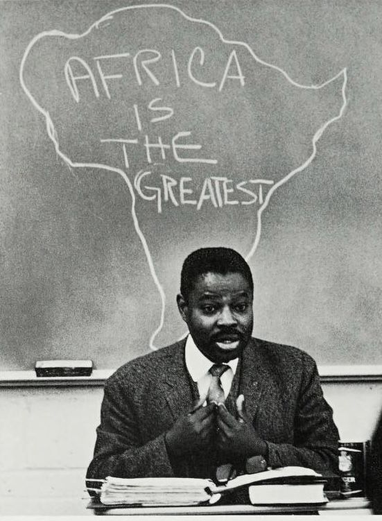
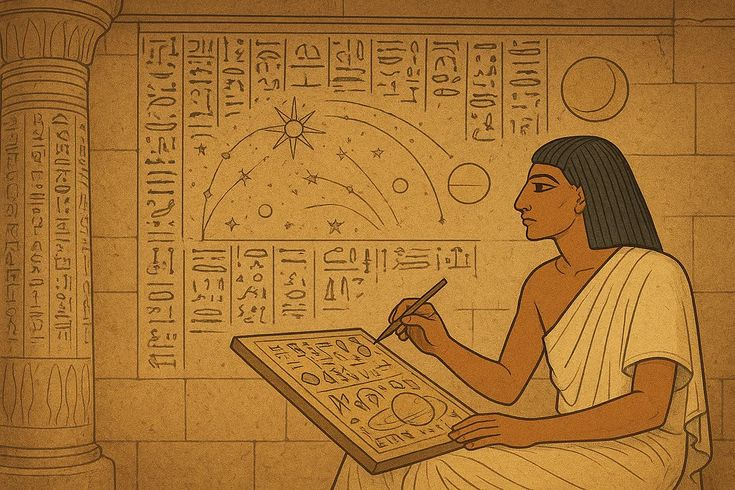
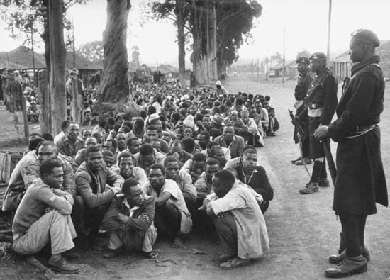

The story of philosophical thought across a vast and diverse continent — from ancient written traditions and systems of oral reflection to questions of personhood, community, knowledge, colonialism, decolonization, and the continuing effort to understand African philosophy on its own critical and historical terms.
African philosophy is not a single doctrine, school, religion, or intellectual system shared identically across an entire continent. Africa contains thousands of communities, languages, historical experiences, and intellectual traditions. Philosophical reflection has consequently appeared in many different forms: written texts, oral argument, ethical instruction, proverbs, political debate, systems of customary law, religious reflection, philosophical dialogue, and the work of identifiable individual thinkers.
To study the history of African philosophy is therefore not simply to search for one ancient doctrine called "the African worldview." It is to investigate how different African peoples and thinkers have reflected on recurring human questions: What is a person? What makes a life good? What is justice? How should political authority be exercised? What can human beings know? How are individuals related to their communities? And how should inherited traditions be examined when societies themselves are changing?
This page follows that history from ancient and early written traditions through systems of oral philosophical reflection, debates about personhood and communal life, the intellectual consequences of colonialism, the struggles for independence and decolonization, and the emergence of African philosophy as a major field of contemporary academic inquiry. The result is not a single linear story but a map of interconnected traditions, arguments, disagreements, and continuing philosophical conversations.
African philosophy also raises an important question about philosophy itself: who decides what counts as philosophy? For centuries, dominant philosophical histories often gave little attention to African intellectual traditions or judged them according to narrow assumptions about writing, individual authorship, and European institutions. Modern African philosophers have challenged those exclusions while also debating critically how oral traditions, collective beliefs, and individual philosophical arguments should be understood.
Ancient Egyptian wisdom and instructional literature explores moral conduct, justice, authority, order, and human responsibility
Diverse intellectual traditions develop through written learning, oral memory, religious scholarship, political reflection, and philosophical debate
Ethiopian philosophical literature associated with Zär'a Yaʿǝqob and related traditions becomes an important subject of modern historical study
Anton Wilhelm Amo becomes a prominent philosopher of African origin working within German universities
Independence movements intensify philosophical debates about freedom, culture, identity, political authority, and African unity
African and Africana philosophy develop as major fields of ethical, political, epistemological, metaphilosophical, and decolonial inquiry

Long before the modern term "African philosophy" existed, African societies were reflecting on questions that are unmistakably philosophical. Ideas about justice, moral character, political legitimacy, personhood, death, destiny, knowledge, and the structure of reality appeared in many different cultural and historical settings. These reflections were not always organized into books resembling the philosophical treatises later associated with Europe, Greece, or modern universities, but differences of form do not automatically imply an absence of philosophical inquiry.
Africa's intellectual history cannot be explained through a single model of knowledge transmission. Ancient Egypt produced extensive written literature containing ethical instruction and reflection on political order and mortality. Other societies developed highly structured oral systems through which genealogies, laws, moral concepts, historical memory, and intellectual traditions were preserved and debated. In some contexts, specialized individuals became important guardians and interpreters of communal knowledge rather than merely passive repeaters of inherited tradition.
The history of African philosophy is also inseparable from the history of how Africa was represented by outsiders. Colonial and racial ideologies frequently denied or minimized African intellectual achievements, and some influential European philosophers participated in intellectual traditions that ranked human populations hierarchically. Recovering African philosophical history therefore became connected not only with historical research but with a broader struggle against ideas that had excluded Africans from the category of rational and philosophical humanity.
Modern scholarship has consequently had to ask difficult methodological questions. When is a proverb philosophical? Can a collective worldview be called a philosophy? Must philosophy be written by an identifiable individual? Can oral traditions contain arguments capable of critical examination? These questions do not have one universally accepted answer, but the debates surrounding them have become an important part of African philosophy's own intellectual history.

One of the oldest surviving bodies of philosophical and ethical literature associated with Africa comes from ancient Egypt. Egyptian texts of instruction, dialogue, narrative, and reflection addressed moral character, social responsibility, authority, suffering, and mortality. The Instructions of Ptahhotep, traditionally associated with an Old Kingdom official, belongs to a long tradition of wisdom literature concerned with how individuals should speak, act, judge, and exercise power.
A central concept in Egyptian moral and political thought was ma'at, a complex idea associated with truth, justice, rightness, balance, and proper order. Ma'at connected human conduct with a larger moral and cosmic framework: rulers were expected to preserve order, individuals were expected to act truthfully and justly, and disorder was understood as a threat to both social and cosmic stability. The concept therefore brought together ethical, political, and religious dimensions without dividing them into modern academic categories.
Other Egyptian works reveal reflection on problems that remain central to philosophy. Texts concerned with suffering, disappointment, death, and the instability of human fortune ask how a person should understand a difficult existence. Such writings should not simply be converted without qualification into modern philosophical terminology, yet they demonstrate sustained intellectual engagement with questions about justice, meaning, responsibility, and the conditions of human life.
The relationship between ancient Egypt and the wider history of philosophy remains a subject of scholarly debate, particularly when questions are raised about intellectual exchange between Egypt and the Greek world. What is historically clear is that Egypt possessed a very long and sophisticated written intellectual tradition. African philosophy does not need to depend on the claim that every later philosophical tradition originated there in order for Egyptian thought itself to deserve serious historical study.
Much of Africa's intellectual heritage developed through oral forms of transmission. Oral philosophy should not be understood as simply a collection of unchanging sayings repeated from generation to generation. Oral traditions can involve interpretation, disagreement, adaptation, argument, and the application of inherited concepts to new social problems. A proverb may preserve an insight, but philosophical work can begin when people ask what the proverb means, whether it is true, and how it should guide action in a particular situation.
In different African societies, elders, sages, teachers, religious specialists, judges, poets, historians, and other recognized knowledge holders could participate in the preservation and interpretation of intellectual traditions. Systems of memory were sometimes highly structured, allowing histories, genealogies, political norms, and moral teachings to be transmitted across generations. Oral transmission was therefore not necessarily the absence of intellectual institutions; it could itself involve institutions and recognized methods of learning.
At the same time, modern philosophers have warned against romanticizing oral tradition. Not every inherited belief is automatically a philosophical argument, and traditions can contain contradictions, historical changes, and relations of power that deserve criticism. African philosophy has therefore increasingly examined oral materials neither as inferior to written philosophy nor as sacred collections beyond questioning, but as important intellectual resources requiring historical, linguistic, and philosophical analysis.
This debate led to an important development known as sage philosophy. Philosophers such as Henry Odera Oruka sought to document and critically examine the reflections of individual indigenous sages whose thought was capable of independent argument rather than merely representing a collective worldview. The project helped demonstrate that the choice between anonymous tradition and formally trained academic philosophy was not the only way to understand philosophical activity.
A recurring area of philosophical interest across several African traditions concerns the relationship between the individual and the community. This should not be turned into the simplistic claim that all African societies reject individuality. Instead, many African philosophers have explored whether becoming a fully developed person involves social recognition, moral responsibility, participation in communal life, and obligations toward others.
Philosophical discussions of personhood in traditions such as Akan thought have examined the distinction between simply being a human individual and achieving the moral qualities associated with mature personhood. This creates questions familiar to moral philosophy everywhere: Is personhood something possessed automatically, or can it also be understood as an achievement? What role do character and responsibility play? Can an individual flourish independently of the social relationships that make a human life possible?
The concept of ubuntu, associated especially with southern African linguistic and cultural traditions, has become internationally influential in discussions of ethics, reconciliation, and political philosophy. Ubuntu is often interpreted through ideas of human interdependence and the claim that one's humanity is deeply connected with the humanity of others. Yet ubuntu should not be presented as the single philosophy of Africa; it belongs to particular historical and linguistic contexts and has been interpreted differently by different thinkers.
These traditions have contributed to contemporary debates about whether moral philosophy should begin primarily with individual rights, individual autonomy, social relationships, virtues, duties, or some combination of these. African philosophers continue to debate these questions critically, including whether appeals to community can sometimes conceal conformity or unjust authority. The philosophical importance of communal ethics lies not in providing easy answers but in expanding the range of concepts through which human relationships can be examined.
African philosophy cannot be reduced to ethics alone. Philosophers and scholars studying traditions associated with Akan, Yoruba, Igbo, Oromo, Dogon, and many other peoples have investigated questions about metaphysics, epistemology, causation, the nature of the self, destiny, language, and the relationship between visible and invisible aspects of reality. The diversity of these traditions makes sweeping statements about a single continental metaphysics historically unreliable.
Questions about knowledge have been especially important because knowledge can be understood through different social practices. How does a community distinguish reliable testimony from falsehood? What role does experience play? Can wisdom acquired over a lifetime count as a form of knowledge? How should inherited authority be tested? These questions connect traditional intellectual practices with modern epistemology and demonstrate that philosophical problems can arise within many different cultural settings.
Language has also become a major subject of African philosophical inquiry. Philosophers such as Kwasi Wiredu argued that philosophical concepts should not simply be transferred from European languages into African contexts without examining the assumptions embedded within them. His project of conceptual decolonization asks philosophers to investigate how different languages organize experience and whether inherited conceptual frameworks sometimes distort the problems they are meant to explain.
The study of indigenous philosophical traditions is therefore not only an attempt to preserve the past. It can also provide conceptual resources for contemporary questions about democracy, justice, environmental responsibility, knowledge, education, language, and political authority. The most productive approach does not assume that tradition must either be worshipped or abandoned; it asks what can be critically learned from it.
Africa's philosophical history includes identifiable authors as well as collective traditions. Ethiopia, for example, developed a substantial written intellectual culture preserved through manuscripts and shaped by local traditions together with interactions involving Christianity and wider Mediterranean and African intellectual worlds. These writings demonstrate the importance of looking beyond the assumption that African philosophical history was exclusively oral.
Zär'a Yaʿǝqob, traditionally associated with the seventeenth-century work Hatata, has become one of the most widely discussed names in the history of Ethiopian philosophy. The work is commonly presented as an inquiry into reason, morality, religion, and the examination of inherited beliefs. Its place in the history of philosophy has attracted growing international attention because it presents a striking example of rational and critical reflection within an African intellectual context.
The historical study of the Hatata also requires caution. Questions concerning the manuscript tradition, dating, authorship, and interpretation have generated scholarly disagreement. Rather than weakening its importance, this controversy illustrates a broader principle of intellectual history: traditions should be investigated through evidence and critical scholarship rather than turned into unquestioned symbols for modern cultural claims.
The Ethiopian example points toward a larger historical lesson. African philosophy contains multiple kinds of intellectual evidence: manuscripts, inscriptions, oral testimony, religious scholarship, political texts, philosophical essays, and modern academic writing. A serious history of the field must be capable of studying all of these without pretending that they belong to one uniform tradition or share one method.

The modern history of African philosophy cannot be separated from colonialism. European political domination was accompanied by powerful intellectual systems that frequently portrayed African peoples as primitive, irrational, or incapable of producing philosophy. Such ideas were not confined to popular prejudice; racial hierarchies were also discussed within influential European philosophical and scientific traditions.
This exclusion created a profound intellectual problem. African thinkers and scholars were required not only to address ordinary philosophical questions but, in many cases, to challenge the prior assumption that Africans were capable of philosophy at all. The struggle for political independence was therefore connected with struggles over historical memory, education, culture, language, and the authority to describe African societies.
Recovering neglected intellectual traditions became an important anti-colonial project. Yet the process created new dangers. In response to colonial denigration, there could be a temptation to describe African traditions as uniformly harmonious, ancient, and philosophically superior. Critical African philosophy increasingly argued that liberation from colonial categories should not require replacing them with new myths that cannot be questioned.
The deepest challenge was therefore double: African philosophy had to resist the exclusion of African intellectual traditions from the history of philosophy while preserving the right to criticize African societies, traditions, and political systems themselves. Decolonization, in this sense, is not simply celebration of the past; it is also the creation of intellectual conditions in which critical thought can flourish freely.
One of the defining debates in twentieth-century African philosophy concerned ethnophilosophy. The term was often used critically to describe approaches that presented the shared beliefs of an entire people as though they formed a single anonymous philosophy. Such approaches frequently drew upon proverbs, myths, religious ideas, and cultural practices to reconstruct systems described as Bantu, Dogon, Yoruba, or other philosophies.
Paulin Hountondji became one of the most influential critics of this approach. He argued that describing philosophy primarily as a collective and anonymous worldview risked treating African thought differently from European philosophy, where individual disagreement, argument, and authorship were considered central. For Hountondji, African philosophy should be an active and critical practice rather than merely a catalogue of inherited communal beliefs.
The debate was never as simple as a choice between oral tradition and modern academic philosophy. Other thinkers argued that the critique of ethnophilosophy could itself become too narrow if it accepted European standards of writing and professional institutions as the only valid measures of philosophical activity. The work of philosophers studying sage philosophy and critically examining indigenous concepts attempted to find more complex ways of taking oral intellectual traditions seriously without treating every collective belief as beyond criticism.
This debate remains important because it asks a universal philosophical question: Is philosophy defined by its subject matter, its method, its institutions, its written form, or its commitment to criticism and argument? African philosophers have not merely answered this question for Africa. Their disagreements have contributed to wider debates about the nature and boundaries of philosophy itself.
During the twentieth century, anti-colonial movements transformed the philosophical landscape of Africa. Political independence raised urgent questions that could not be solved merely by removing colonial rulers. What should a newly independent state become? How could different peoples live together within political boundaries often created under colonial rule? What relationship should exist between inherited traditions and modern institutions?
Thinkers such as Kwame Nkrumah, Julius Nyerere, Léopold Sédar Senghor, and others developed influential but differing responses. Their work addressed African unity, socialism, humanism, culture, political liberation, economic development, and the search for new social orders. These thinkers should not be collapsed into one school: their political philosophies emerged from different historical experiences and often disagreed about the meaning of tradition and modernity.
Frantz Fanon, working within the wider intellectual world of Africa and the African diaspora, analyzed colonial domination as a psychological, political, and existential system. His writings examined violence, identity, alienation, race, and the dangers facing national liberation movements after independence. Fanon's influence demonstrates how African and Africana philosophy frequently crosses simple geographical boundaries.
Political independence also made philosophical criticism more necessary. African philosophers increasingly examined authoritarianism, corruption, inequality, ethnic conflict, democracy, development, and the relationship between political power and individual freedom. The goal was not simply to create a philosophy that was "African" in name, but to develop rigorous intellectual resources capable of confronting real historical problems.
Contemporary African philosophy is a living field rather than a closed historical tradition. Philosophers working across Africa and throughout the African diaspora contribute to ethics, political philosophy, epistemology, philosophy of language, philosophy of race, metaphilosophy, feminism, environmental philosophy, and the philosophy of science. The field has grown through universities, journals, conferences, professional organizations, and increasingly international networks of research.
Questions of decolonization remain central. Philosophers continue to ask how educational institutions can recover neglected intellectual histories without replacing one narrow canon with another. They examine whether concepts inherited from colonial languages adequately describe African social realities and how indigenous languages and traditions can contribute to contemporary philosophical inquiry.
African philosophy also increasingly addresses problems created by the present: democracy and political legitimacy, technological change, global inequality, migration, environmental crisis, public health, gender relations, and the continuing consequences of colonial history. Traditional concepts may provide resources for these debates, but they are not simply repeated unchanged. Like every living philosophical tradition, African philosophy develops by reinterpretation, disagreement, criticism, and the creation of new ideas.
The wider field of Africana philosophy extends beyond continental Africa to include philosophical work shaped by the experiences of peoples of African descent throughout the diaspora. African philosophy and Africana philosophy therefore overlap without being identical. Together, they challenge philosophical history to become more geographically and intellectually inclusive while retaining the standards of evidence, argument, and critical examination that make philosophy a continuing conversation rather than a fixed inheritance.
A selection of important figures and intellectual traditions within this long and diverse history.
Traditionally associated with one of ancient Egypt's best-known works of ethical instruction and wisdom literature.
Associated with the Hatata, a work examining reason, morality, religion, and the critical examination of inherited beliefs.
A philosopher of African origin who worked in eighteenth-century German universities and wrote on mind, knowledge, and law.
Ghanaian philosopher and political leader who developed influential ideas about African unity, anti-colonialism, and political transformation.
A major critic of ethnophilosophy who argued for African philosophy as a rigorous, critical, and intellectually active practice.
Ghanaian philosopher known for conceptual decolonization and for bringing Akan philosophical resources into contemporary debate.
Ancient Egyptian Wisdom Literature
Traditionally associated with Zär'a Yaʿǝqob
Kwame Nkrumah
Paulin J. Hountondji
Kwasi Wiredu
John S. Mbiti
African philosophy has helped transform the way the global history of philosophy is written. Older narratives often treated philosophy as beginning in a small number of civilizations and moving outward through a largely European intellectual canon. Research into African written traditions, oral intellectual practices, individual thinkers, and modern philosophical movements has made that historical picture increasingly difficult to maintain in such a narrow form.
Its influence is not limited to the recovery of neglected history. African philosophers contribute directly to contemporary discussions of ethics, democracy, political legitimacy, knowledge, race, language, culture, development, and environmental responsibility. Concepts such as ubuntu, personhood, consensus, conceptual decolonization, and philosophical sagacity have entered wider international debates and are continually reinterpreted and criticized.
Perhaps African philosophy's most important contribution is metaphilosophical: it forces philosophy to examine its own boundaries. If philosophy values rational criticism and the pursuit of truth, can its history legitimately ignore traditions merely because they were preserved orally or developed outside particular European institutions? At the same time, how can inclusion avoid turning cultural traditions into unquestionable symbols? These questions have implications far beyond Africa.
African philosophy is therefore both historical and contemporary. It preserves and investigates intellectual inheritances stretching across millennia while confronting problems created by colonialism, independence, globalization, inequality, and technological change. Its history is not a story of philosophy finally arriving in Africa, but of increasingly recognizing, documenting, criticizing, and expanding philosophical activity that has always taken many different forms.
Time Period: Ancient traditions to the contemporary era
Key Regions: North Africa, West Africa, Central Africa, East Africa, Southern Africa, and the wider African continent
Major Forms: Written texts, oral traditions, philosophical dialogue, ethical instruction, political thought, and modern academic philosophy
Central Questions: What is a person, what is justice, how should communities live, what can human beings know, and how should societies confront domination and injustice?
Major Modern Debates: Ethnophilosophy, sage philosophy, decolonization, language, identity, political freedom, and the nature of philosophy itself
While diverse philosophical traditions developed across the African continent, another vast intellectual world was taking shape across East Asia. In ancient China, thinkers such as Confucius, Laozi, Mozi, and Zhuangzi explored ethics, political order, human nature, harmony, knowledge, and the proper way of living.